如何写出高稳定性的xpath？
1. 手写好于复制
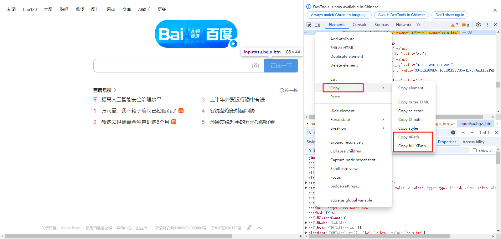
不要：右键Copy Xpath
要：手写 //input[@id="su"]
2. 尽量使用相对不变的属性定位，尽管没有哪个属性是永远不变的(包括id)
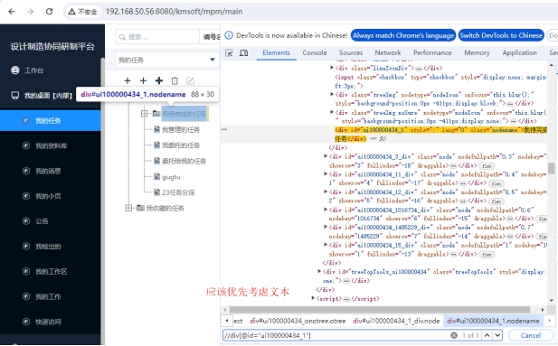
不要写：//div[@id="ui100000434_1"]
要写：//div[text()='我待完成的任务']
3. 看准Id是否可信
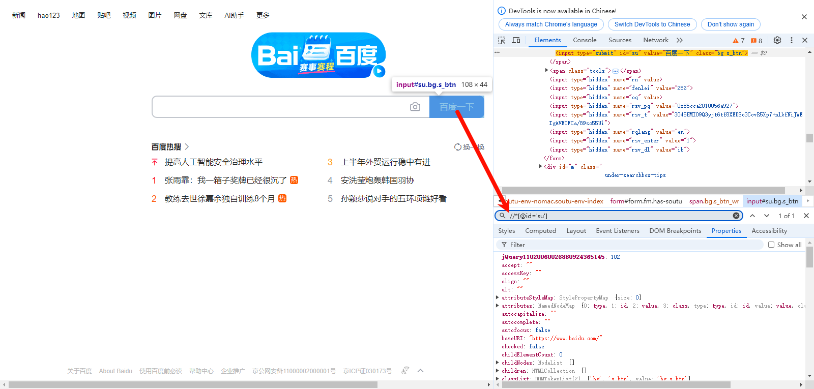
发版会变的id特征：一串数字、一串无意义的字母，如：//div[@id="ui100000434_1"]
唯一id特征：有意义的命名、开发声明了唯一，如：//input[@id="su"]
4. 利用星号解决标签变化内容不变的情况
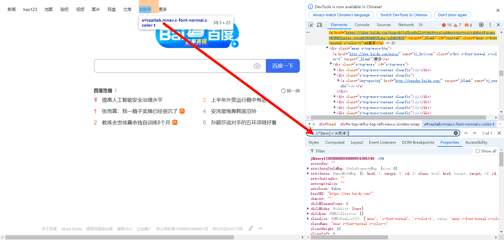
div和span之间变化是最多的，使用*可以解决标签变内容不变的情况
常规写法：//div[text()='AI助手']
更稳定的写法： //*[text()='AI助手']
5. 内容较长时使用元素的部分值而不是完整的值
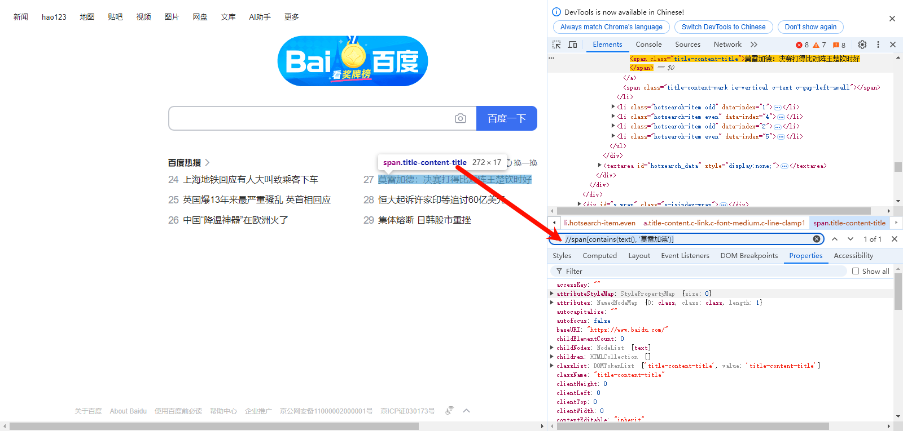
不要写：//span[text()='莫雷加德：决赛打得比对阵王楚钦时好']
优化为：//span[contains(text(), '莫雷加德')]
6. 找子节点
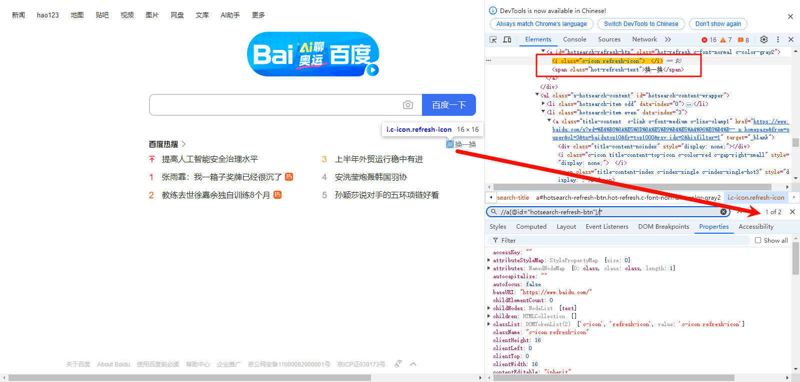
所有子：//a[@id="hotsearch-refresh-btn"]/*
指定子：//a[@id="hotsearch-refresh-btn"]/span
7. 找父节点
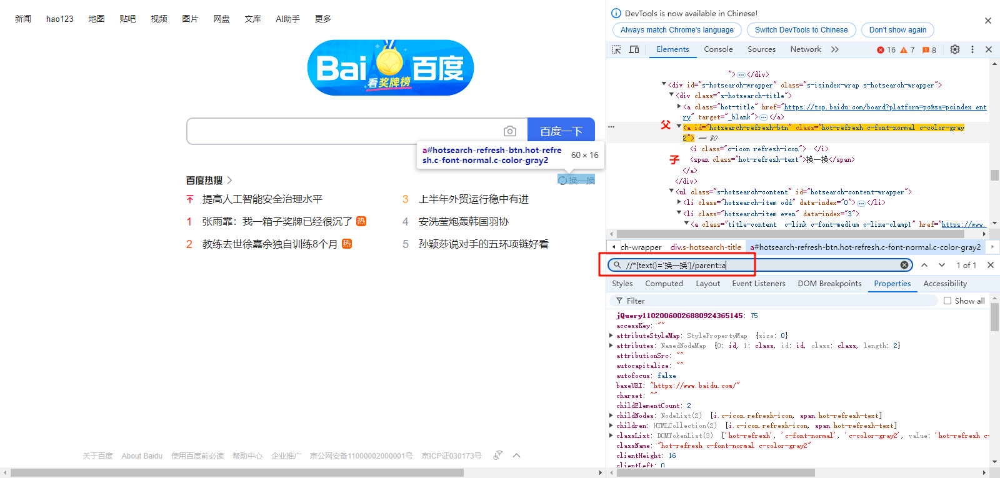
写法：parent::
例子：//*[text()='换一换']/parent::a
8. 找兄节点
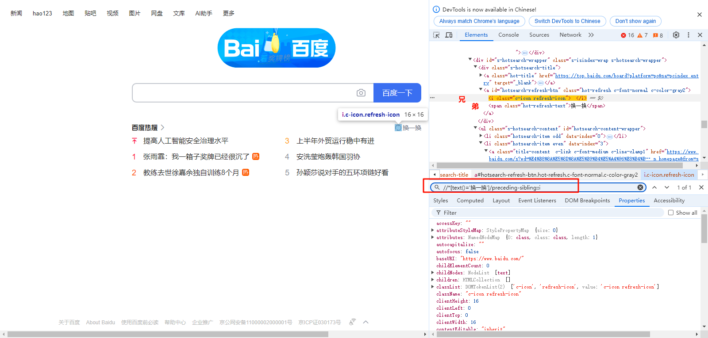
写法：preceding-sibling::
例子：//*[text()='换一换']/preceding-sibling::i
9. 找弟节点
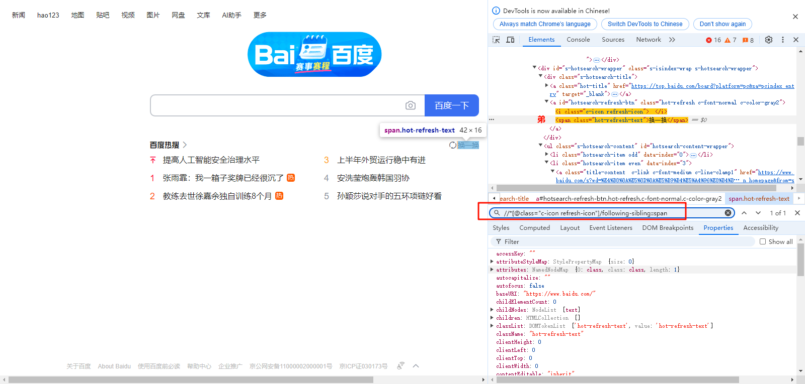
写法：following-sibling::
例子：//*[@class="c-icon refresh-icon"]/following-sibling::span
10. 往下查找
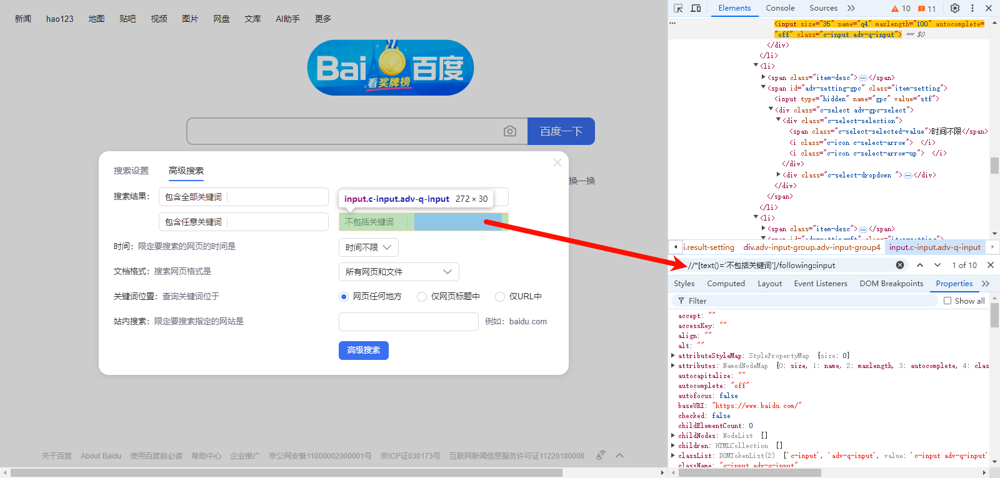
用法：following::
例子：//*[text()='不包括关键词']/following::input
11. 往上查找
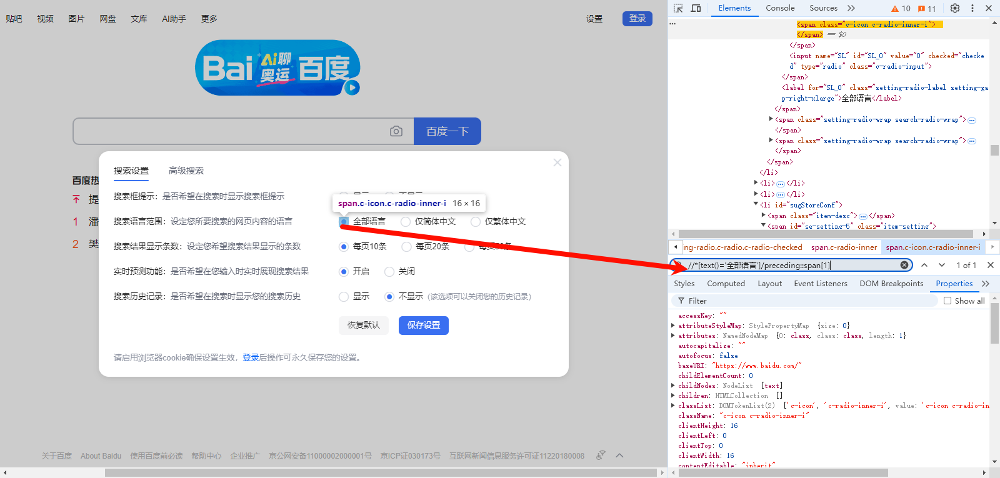
用法：preceding::
例子：//*[text()='全部语言']/preceding::span[1]
12. 找祖先

用法：ancestor::
例子：//li[text()='搜索设置']/ancestor::ul
13. 索引-子节点索引
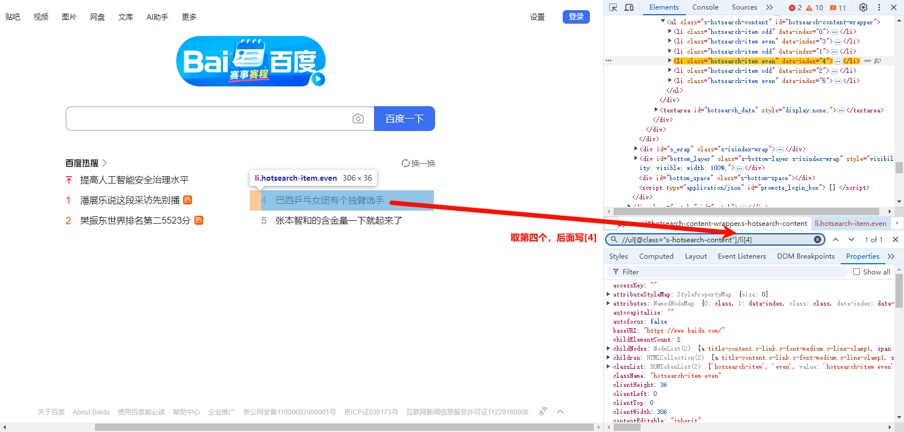
用法：第几个就写几，如上第四个索引，后面加[4]
例子：//ul[@class="s-hotsearch-content"]/li[4]
14. 索引-全范围索引
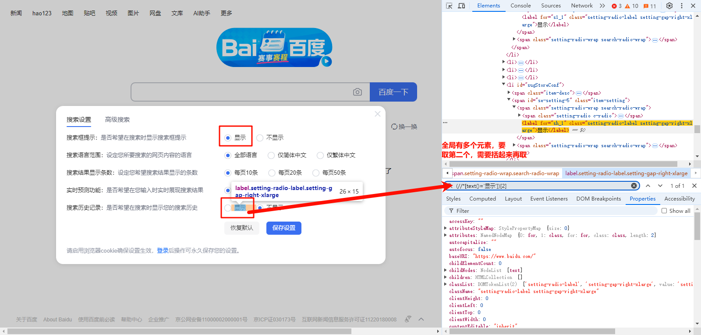
用法：取全范围索引，需要括起来再取索引
例子：(//*[text()='显示'])[2]
15. 最后一个
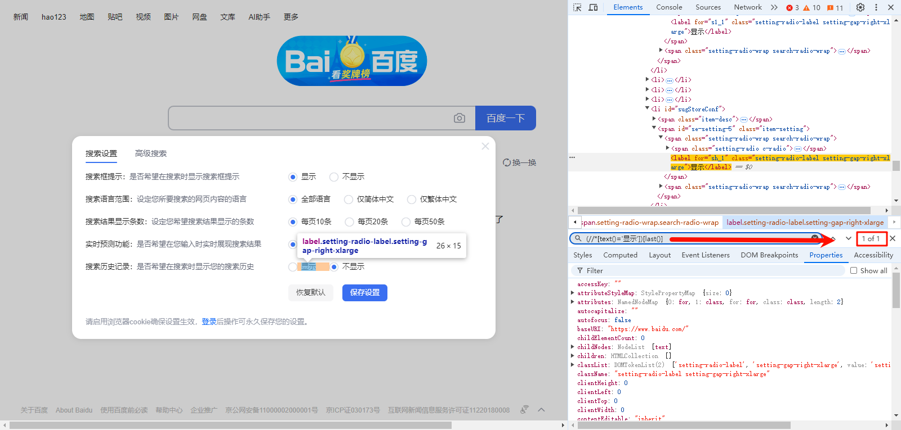
用法：last()
例子：(//*[text()='显示'])[last()]
16. 包含关系-属性

又一例子：//a[contains(@class,"s-bri")]
17. 逻辑关系
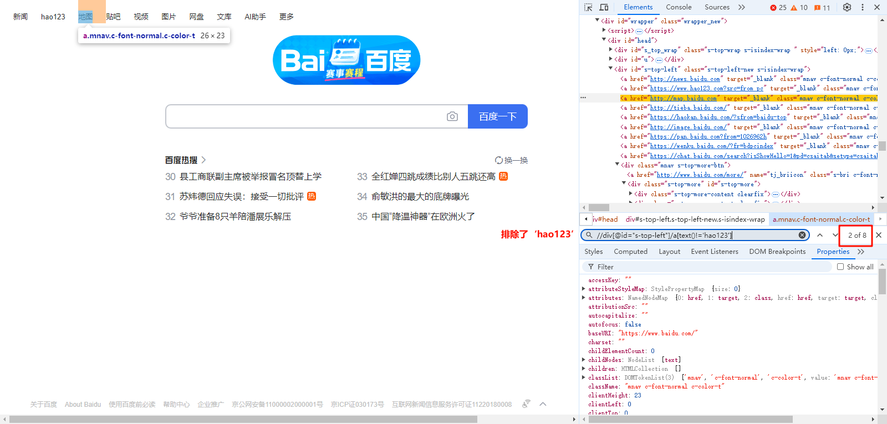
用法：and、or、!=、=、
例子：//div[@id="s-top-left"]/a[text()!='hao123']
18.矢量元素的特殊定位
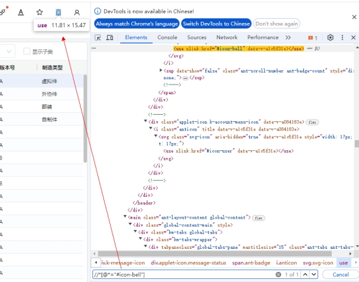
不要写：//use[@xlink:href="#icon-bell"]，这样写定位不到
要写：//[@="#icon-bell"]
常见矢量元素？use、svg、g